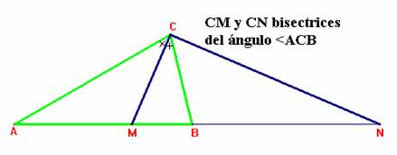
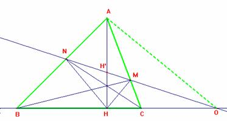
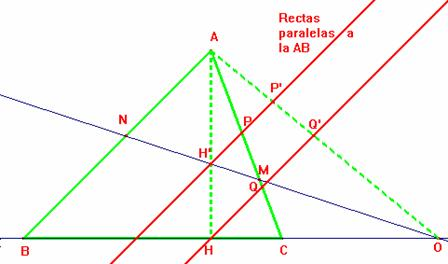

Solución del profesor F. Damián Aranda Ballesteros, del IES Blas Infante de Córdoba (21 de enero de 2003).
Problema 71.-
En todo triángulo ABC de altura BH, al trazar las cevianas AM y CN concurrentes con BH, se establece que la altura será bisectriz del ángulo MHN.
Solución:
Los puntos B, H, C y O (ver figura 2) forman una cuaterna armónica. Los puntos N, H', M y O también forman una cuaterna armónica siendo los rayos HH' y HO perpendiculares entre sí. Por tanto esos dos rayos son las bisectrices de los rayos HN y HM.
Justificación:
Paso 1
Dado un triángulo ABC, si trazamos las bisectrices del ángulo en C y determinamos sobre el lado AB los puntos M y N, pies de las bisectrices anteriores, entonces se tiene que los puntos A,M,B y N forman una cuaterna armónica.
|  |
Por el teorema de la bisectriz tenemos que: Dividiendo ambas igualdades resulta: que expresa que los puntos A,M,B y N forman una cuaterna armónica.
El paso recíproco será cierto siempre que dos de los rayos sean perpendiculares entre sí.
Paso 2
|  |
De la construcción de la figura, deduciremos que las rectas AB, AH, AC y AO forman una cuaterna armónica. En efecto, para ello bastará comprobar que los puntos B,H,C,O forman una cuaterna armónica. Y esto será así sii Veamos esto con mayor detalle: |
El teorema de Ceva aplicado al triángulo ABC nos indica que:
Por el teorema de Menelao aplicado al mismo triángulo ABC, tenemos que:
Dividiendo ambas expresiones entre sí obtenemos:
Paso 3
Por otro lado, sabemos que la transversal ON determina sobre el haz de rectas dado los puntos N,H',M,O conservándose la razón doble entre ellos.
Nota: Expresaremos la razón doble de los puntos N,H',M,O como (NH'MO).
Esto es, (NH'MO)=
Luego entonces se tendrá que o con nuestra notación: (NH'MO)=(BHCO)

Para ver esto, tracemos dos rectas paralelas a la recta AB por los puntos H' y H, determinando así los puntos P,P' y Q,Q' que se ven en la figura.Tenemos que:
Dividiendo ambas expresiones, resulta:
Procediendo de igual manera para los puntos B,H,C,O llegamos al siguiente resultado:
Ahora bien, la igualdad manifiesta de hace que lo sea también:
es decir: (NH'MO)=(BHCO)
Paso 4
Si (NH'MO)=(BHCO)=k entonces se obtiene de modo trivial que (NMH'O)=(BCHO)=1-k y, de esta forma, tenemos que H' es el conjugado armónico de O respecto de B y C.
Por tanto, tenemos cuatro rectas con vértice en H conjugadas HN, HH', HM y HO. Como quiera que HH' y HO son perpendiculares entre sí entonces por el recíproco del Paso 1, obtenemos que HH' es bisectriz de los rayos HN y HM
c.q.d.